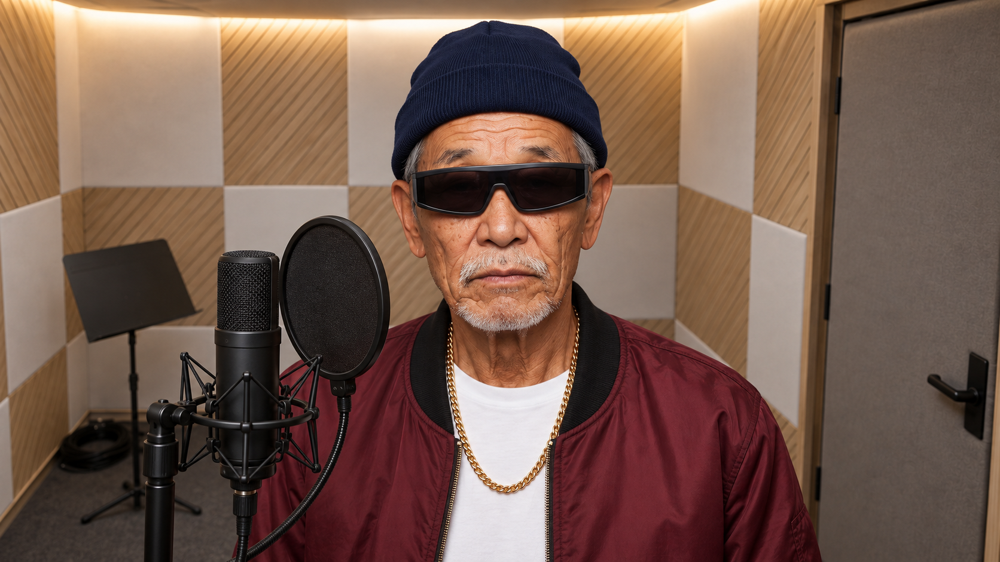
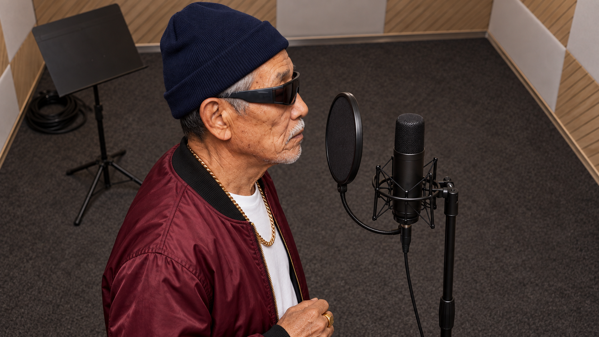
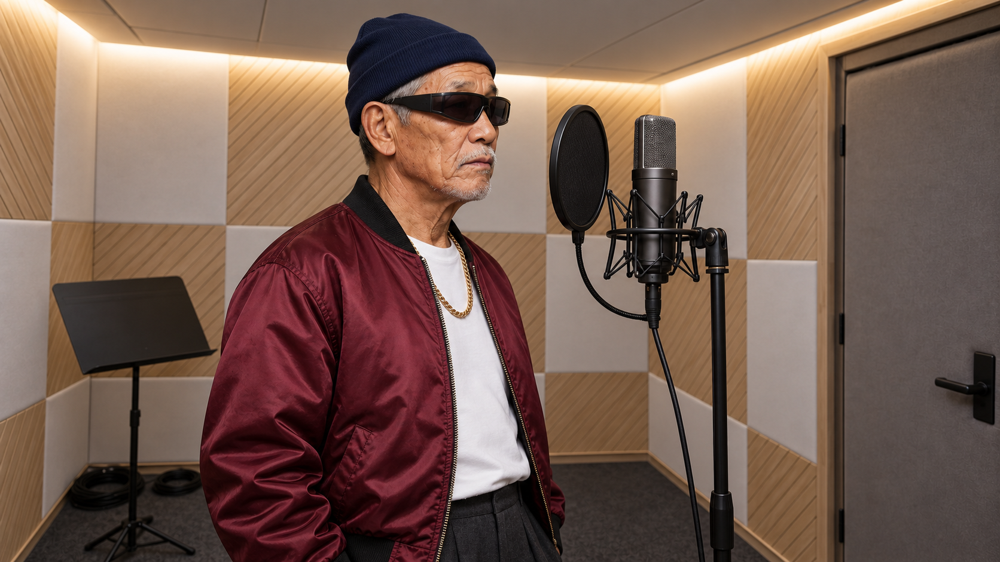
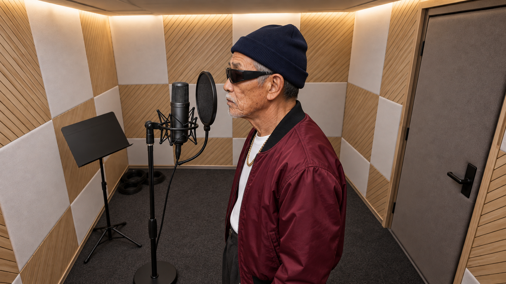
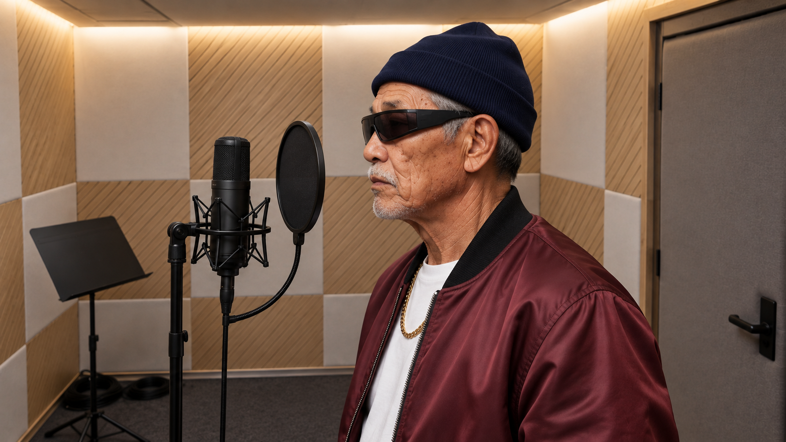

KF01S · 얼굴 검출 성공
승인된 KF 5장과 컷 설계는 그대로입니다. 현재는 H3 발주 0건 · 비용 $0이며, 아래 두 기계 차단의 처리 방향만 정합니다.
B2 27건 — KF02S~KF05S의 옆얼굴을 현재 얼굴 랜드마크 검출기가 찾지 못했습니다. “못 재면 발주하지 않는다” 규칙에 따라 차단됐습니다.
R77 1건 — 실제 직접 호출이 아니라 h3_source_provenance.py의 설명용 docstring 안 파일명 문자열을 직접 호출 경로로 오검출했습니다.
별도 C4a 8건 판단은 기존 C4a 판단 페이지에 있습니다. C4a·B2·R77이 모두 해소되기 전에는 큐에 넣지 않습니다.

KF01S · 얼굴 검출 성공

KF02S · 옆얼굴 검출 실패 · 4컷 영향

KF03S · 옆얼굴 검출 실패 · 9컷 영향

KF04S · 옆얼굴 검출 실패 · 7컷 영향

KF05S · 옆얼굴 검출 실패 · 7컷 영향
C02, C04, C06, C08, C10, C12, C15, C16, C18, C19, C21, C23, C25, C27, C29, C32, C33, C35, C37, C39, C41, C43, C45, C47, C52, C53, C55
scripts/regression.py:5979
if "build-h3-jobs.py" in body:
bypass.append(...)
scripts/h3_source_provenance.py:128
"""허브 `build-h3-jobs.py`의 `read_prompt()`와 같은 규칙으로 읽는다."""
R77은 파이썬 소스 전체를 문자열 검색합니다. 현재 검출된 것은 실행문이 아니라 위 설명 한 줄이며, T32는 실제로 queue_request.py만 사용하도록 설계됐습니다.
두 판단을 고르면 문장이 자동으로 바뀝니다. 기본값은 최소 변경 A+A입니다.